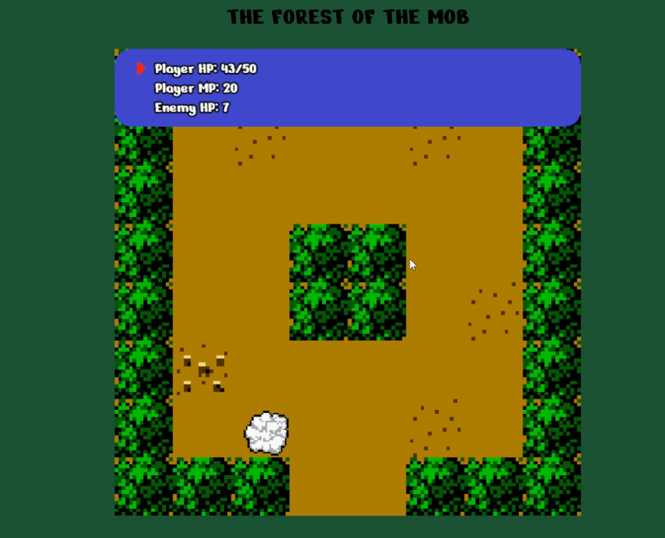
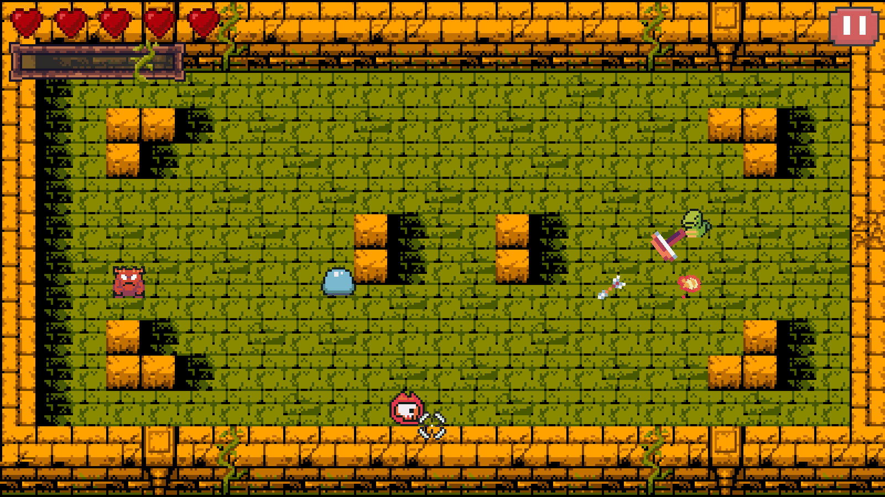
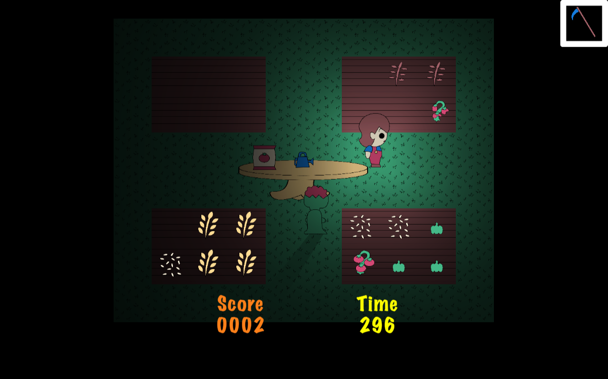
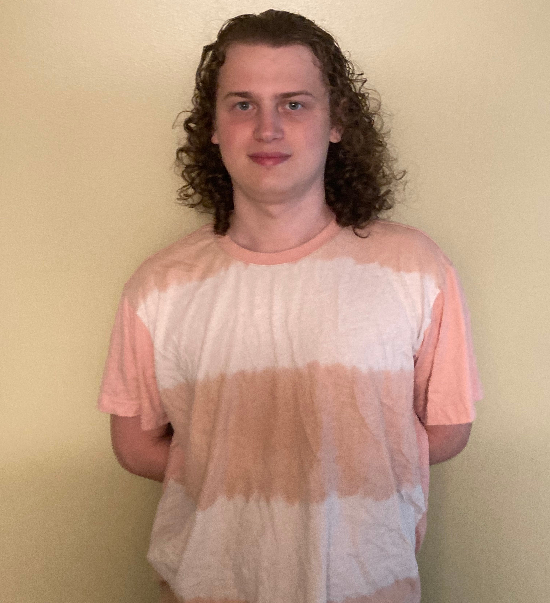
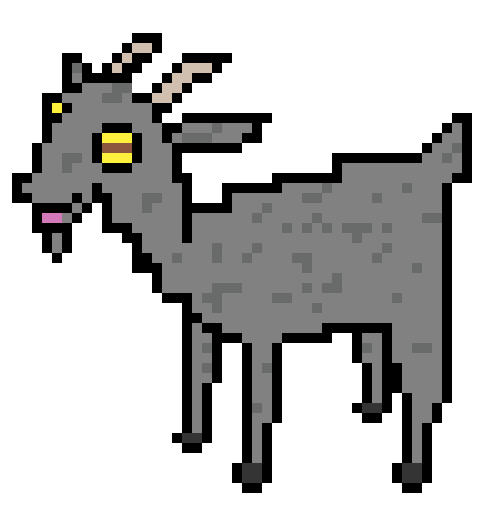
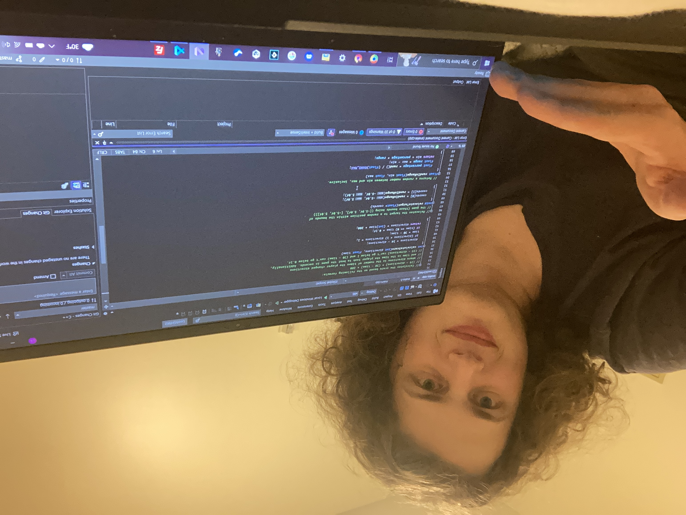
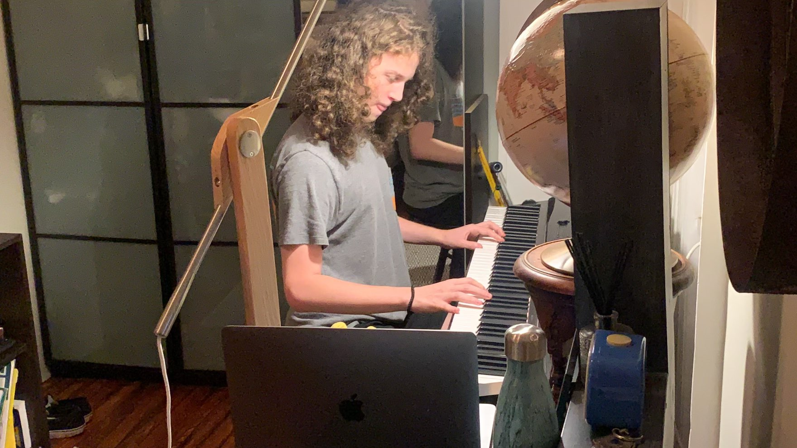

My Projects
The Forest of the Mob
A small (computer only) web browser game I made based on my first calculator game from years ago,
you are in the titular forest looking for a cave deep within while dealing with
the mobs roaming inside it. It can be played here.
(In-game music and sound effects are sourced from Fire Emblem: The Blazing Blade and
are © Nintendo and Intelligent Systems)

Crossboa
A MonoGame project, made in a group of four. You play as a snake with a crossbow and need to go through an infinite dungeon, but the catch is that you only have one arrow and must pick it up again after use. You can download it from itch.io for free.

Top Crops
A Unity game made by two other people and I in Unity for the RIT Game Development Club's Fall 2022 Game Jam, refined after the event by myself to be far more playable. You have 3 minutes to plant, water, and harvest as many crops as possible, while also avoiding zombies. It's available to play on itch.io. (also computer only)


Other Accounts

About Me

A Bit About Me
I'm a very laid-back person, and I get along well with almost anyone. I always strive to meet my standards for everything I do, be it working on a grand personal project or smaller-scale activities like board games with friends. I also have a creative mind, and enjoy expressing that in any medium.

Me and Coding
I started coding in 6th grade when I discovered Scratch, and have loved coding ever since. I moved on to coding my TI-84 for the rest of middle school, then went to Brooklyn Technical High School and eventually Rochester Institute of Technology to further hone my coding skills. This brings us to today, where I have experience in several languages and a couple game engines, but I'm more than willing to push that to even greater heights.

Other Interests
There is far more to my life than programming. I've played piano for as long as I can remember, I have some pixel art experience, and I play games, of both video and board varieties. Some personal favorites include the Octopath Traveler video game series and the board game Betrayal at House on the Hill. I also enjoy playing tabletop RPGs when I get the chance, especially when I'm allowed lots of creative freedom with my character design.
♪ Now Playing: ♪
Yet Another Sleepless Night